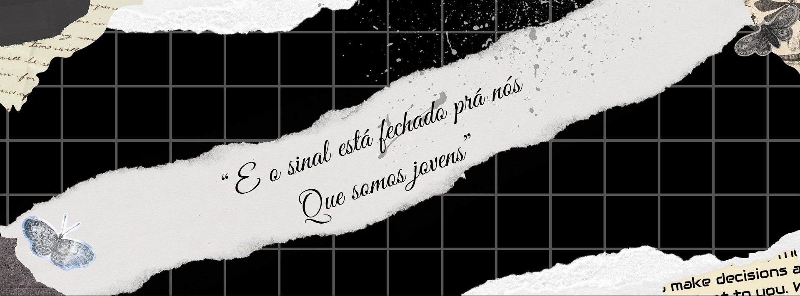
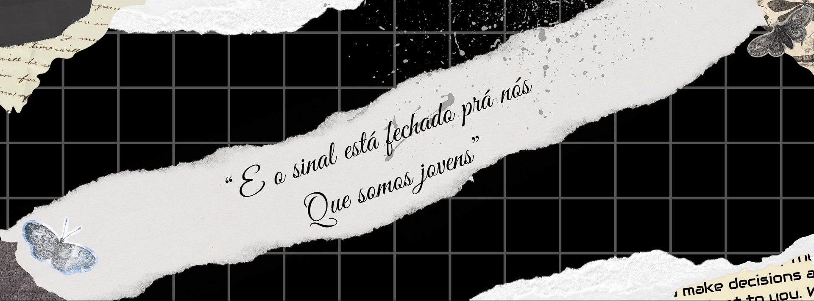

Resumo da história de Elis Regina e suas músicas
Elis Regina foi uma das maiores cantoras brasileiras de todos os tempos, conhecida por sua potência vocal, interpretação intensa e perfeccionismo artístico. Nascida em Porto Alegre, em 17 de março de 1945, começou a cantar ainda criança em programas de rádio e, aos 15 anos, já gravava seu primeiro disco.
Sua carreira deslanchou nos anos 1960, especialmente após sua apresentação marcante no Festival de Música Popular Brasileira de 1965, onde interpretou "Arrastão", de Edu Lobo e Vinícius de Moraes. A partir daí, tornou-se uma das vozes mais influentes da música brasileira.
Elis era conhecida por seu envolvimento com os movimentos musicais como a Bossa Nova, MPB e Tropicália, além de seu posicionamento crítico durante a ditadura militar no Brasil — apesar de também ter sido pressionada e mal interpretada por isso.
Entre suas músicas mais conhecidas estão:
"Como Nossos Pais" (Belchior) – Uma das mais icônicas, com forte carga emocional e crítica social.
"O Bêbado e a Equilibrista" (João Bosco e Aldir Blanc) – Hino informal da anistia política, simbolizando a esperança e os exilados.
"Madalena" (Ivan Lins) – Um dos seus grandes sucessos dos anos 1970.
"Fascinação" – Canção romântica que ficou marcada por sua interpretação intensa.
"Alô, Alô Marciano" (Rita Lee) – Crítica bem-humorada à situação política e social do Brasil.
Elis também era famosa por parcerias com grandes nomes da música brasileira, como Tom Jobim, Jair Rodrigues, Milton Nascimento, Gilberto Gil, e Chico Buarque. O álbum "Elis & Tom" (1974), gravado com Tom Jobim, é considerado um dos maiores discos da música brasileira.
Elis Regina faleceu tragicamente em 1982, aos 36 anos, deixando uma lacuna na música brasileira. Sua morte precoce chocou o país, mas seu legado artístico permanece vivo até hoje, sendo reverenciada por gerações de músicos e admiradores.
 
